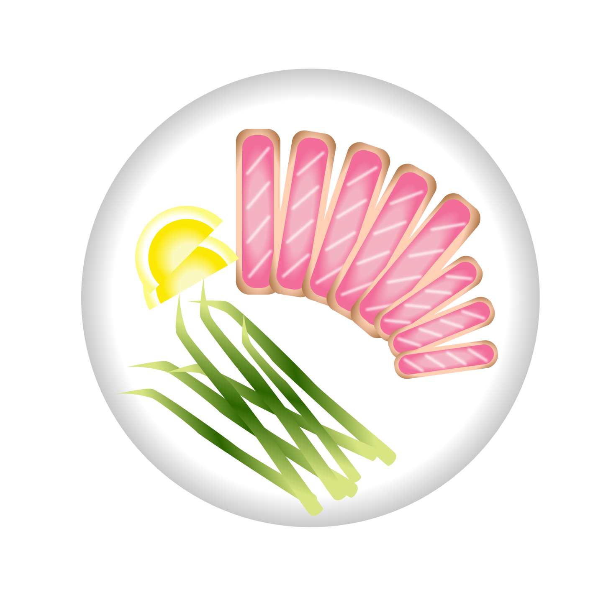

start the journey


พลาสติกบางส่วนจะเริ่มละลาย
เป็นไมโครพลาสติก


ที่มีขนาดเท่าแพลงค์ตอน

จึงทำให้ปลาทะเลเข้าใจผิด
และกินไมโครพลาสติกเข้าท้องไปด้วย

แต่การที่ปลากินไมโครพลาสติก
ไม่ได้แปลว่าเป็นการกำจัด
แต่เป็นส่วนหนึ่งของจุดเริ่มต้น

ของการเอาไมโครพลาสติกเข้าร่างกายมนุษย์